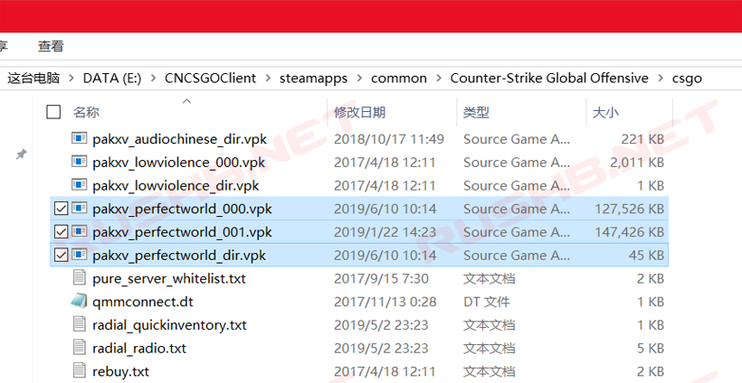
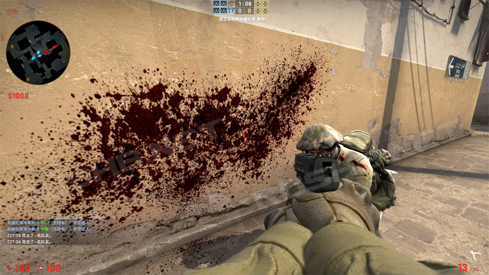
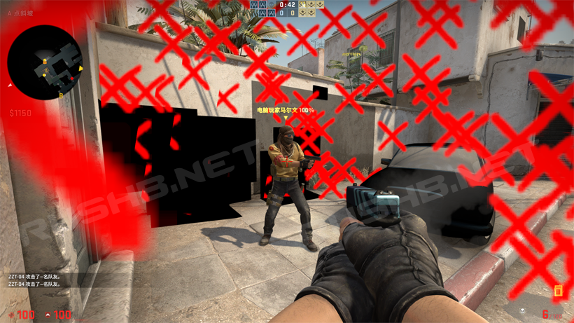
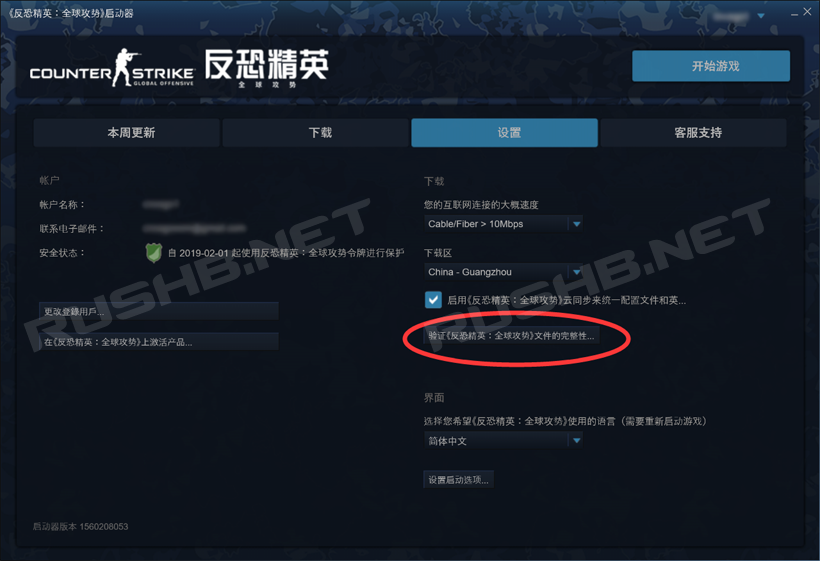

CSGO RushB中文网
CSGO RushB中文网
CSGO国服能够通过删除VPK文件来恢复成和国际服一样红色血迹以及部分武器骷髅皮肤、贴纸，另外部分玩家遇到的血迹贴图变成黑色方块，以及溅血效果变成红色叉叉/XX，也可以通过以下方法解决。
原则上不建议玩家碰触游戏文件，若出现问题，本站概不负责
恢复成国际服一致的红色血迹和武器皮肤、贴纸方法
原理：删除包括国服贴图的数据包，让游戏直接调用原本的贴图。
打开你的CSGO国服启动器安装路径，进入以下文件夹：
\steamapps\common\Counter-Strike Global Offensive\csgo
*以你安装时设置的文件夹名为准
找到其中这三个文件，选中并删除：
- pakxv_perfectworld_000.vpk
- pakxv_perfectworld_001.vpk
- pakxv_perfectworld_dir.vpk

这样，进入游戏后就可以看到恢复成正常的红色血液，另外比如皇冠贴纸、M4A4 | 死寂空间等贴纸皮肤也便会国际服一样的图案。

但是这个反/和谐方法存在问题，就是在每次CSGO更新后血迹会变成黑色方块，包括部分模型贴图等等也会变成黑色，还有命中后的溅血效果变成红色XX，如图，解决方法如下：

黑色贴图、红色XX解决方法
原因：每当CSGO更新时，如果包含国服更新，那么启动器会再次下载这三个文件（或其中1、2个），但由于是增量更新，下载后的国服VPK文件并不完整，游戏调用国服贴图（血迹、皮肤等）但却调用不了，所以血迹和部分模型贴图显示成黑色，溅血变成红色XX。
- pakxv_perfectworld_000.vpk
- pakxv_perfectworld_001.vpk
- pakxv_perfectworld_dir.vpk
解决方法和和上面一样，同样是删除上述3个文件即可。
不过要注意，每次CSGO国服更新需要再次手动删除这3个国服文件，如果不想麻烦，建议玩国际服，或者干脆不删除直接和谐玩。
恢复黑色血液和国服贴图方法：
打开CSGO国服启动器，设置，点击“验证《反恐精英：全球攻势》文件的完整性”即可。
